All in One View
Content from Introduction
Last updated on 2026-06-22 | Edit this page
Estimated time: 8 minutes
Overview
Questions
- What are Pull Requests (PRs)?
- How do PRs help with software development?
Objectives
- Become familiar with the purpose of PRs.
What are Pull Requests?
To borrow from Rachel Garner, “Software developers use pull requests, otherwise known as PR, to initiate the process of integrating new code changes into the main project repository. Pull requests are sent through git systems, like GitLab, GitHub, and BitBucket, to notify the rest of your team that a branch or fork is ready to be reviewed.”
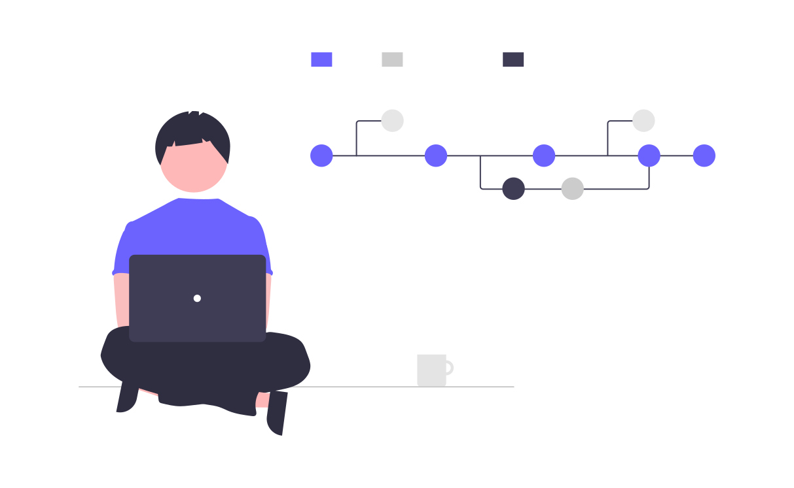
In other words, PRs are a mechanism for introducing and merging changes into a code base in a manner that enables discussion and collaboration.
In this lesson, students will learn about better practices for GitHub PRs.
Back to the StarSort team!
Remember StarSort, the (fictional) telescope-image tool from the Issue Tracking lesson? Last time, you filed a bug report. Today you get to fix it — you’ll open a pull request with the fix, get it reviewed by a teammate, and merge it in. That’s the full contributor loop.
(As before, everything happens in your own practice
repository — StarSort is just the story. Didn’t do the Issues
lesson? No problem: anywhere we say “fix the StarSort bug,” just make a
small change to your README.md instead.)
Where does genAI fit?
Generative AI (LLMs like ChatGPT and Claude) is genuinely useful around PRs: drafting a clear description from your diff, generating a PR template, summarizing a giant changeset for a reviewer, even doing a first-pass review. We’ll flag the most useful spots — with the usual catch: AI drafts, you review.
How Pull Requests Fit in the Development Process
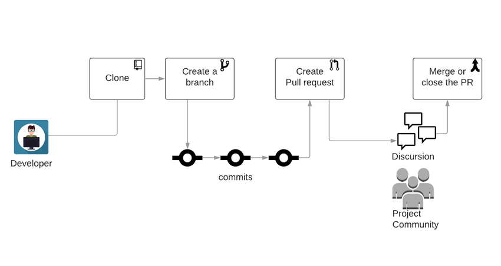
The development workflow can have several different formats; however, a simple one is this:
- Create a feature branch
- Make changes and commit back to the feature branch
- Open a Pull request
The Benefits of Pull Requests
Why route changes through a PR instead of committing straight to
main?
| Benefit | What it gives you |
|---|---|
| Collaboration | A place for others to see and comment on proposed changes before they land. |
| Reduced risk | Teammates can catch bugs, regressions, and risky choices early. |
| Higher quality | No one person knows everything — a second set of eyes improves the code. |
GitHub Pull Requests
GitHub builds branching and merging right into version control: every project can use the Pull requests tab in the repository navigation bar to open, discuss, and merge PRs.
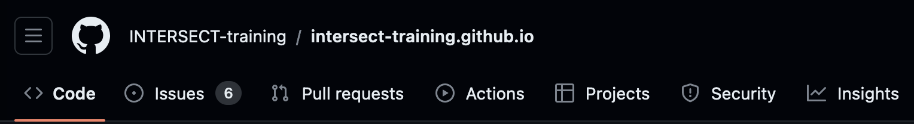
Browsing Open PRs
Let’s peek at a real project’s PR queue. Navigate to https://github.com/spack/spack and find the pull requests page.
- How many PRs are currently open?
- How many have been closed?
- Who is the author of the top-most PR?
Open/closed counts are the toggles at the top of the PR list; the top PR’s author is shown right under its title. Numbers change constantly — a busy project like spack merges PRs all day long.
- Pull Requests are a way to control the introduction of new content into a shared repository.
- Pull Requests enable better collaboration for multiple developers.
Content from Basic Pull Requests
Last updated on 2026-06-22 | Edit this page
Estimated time: 16 minutes
Overview
Questions
- What makes a good PR?
- How do you open a PR?
- How do you interact with a PR?
- How do you merge a PR?
Objectives
- Recognize what makes a pull request easy to review.
- Become familiar with basic actions on GitHub Pull Requests.
What Makes a Good PR?
Before we open one, it helps to know what we’re aiming for. A PR that’s easy (and fast) to review tends to have the following characteristics:
| Characteristic | In plain terms |
|---|---|
| One cohesive change | A PR should do one thing. Don’t bundle a bugfix, a rename, and a new feature together — they can’t be reviewed or reverted independently. |
| Reasonable size | Hundreds of changed lines are miserable to review. If a change is big, split it into smaller PRs. |
| Descriptive what / how / why | The title and description should answer: what changed, how it changed (and side effects), and why. |
Keep these in mind for the PR you’re about to open — we’ll practice spotting violations later.
Open a PR
A PR cannot be opened without some changes to be incorporated. For
this example, we will use the branch and merge
workflow; however, another common method is the fork,
branch, and merge method.
Multiple Paths Available
We will do the rest of this lesson through the GUI; however, all of these steps can be done via command line and your preferred text editor. Do whatever feels right for you!
Make a Change
Edit a file in your repository (click the file, then the Edit pencil). When you’re happy with it, click Commit changes… to open the commit dialog.
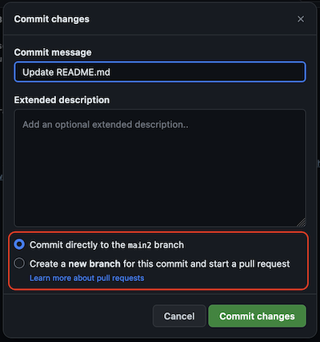
Rather than committing directly to main, choose
Create a new branch. GitHub autofills a branch name,
which you can keep or change.
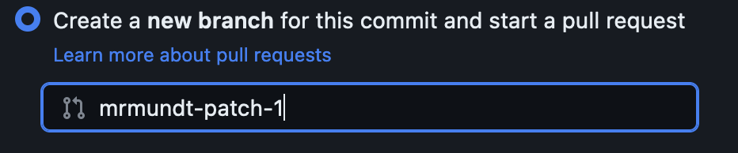
Make a PR
Committing to the new branch loads the Open a pull request page, pre-filled with your commit message as the title. Like an issue, a PR has a Title, a Write area (Markdown), and a Preview. Fill in the description, then click Create pull request.
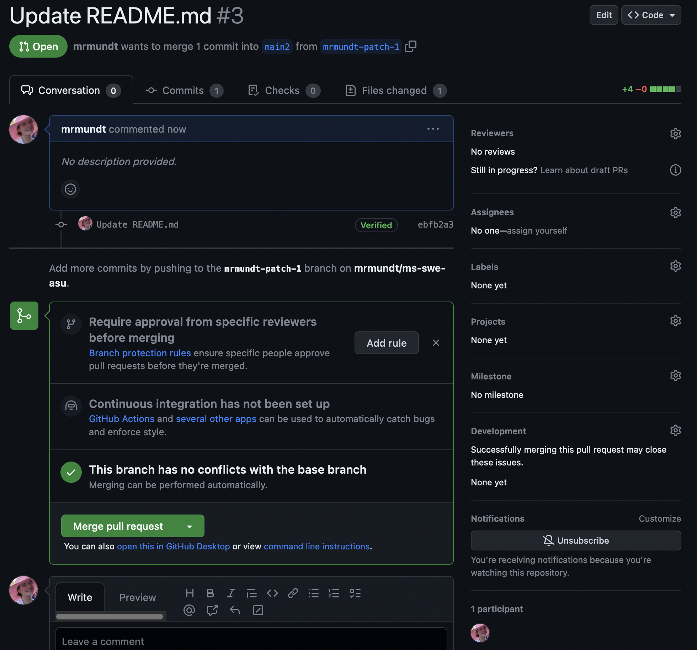
Open Your StarSort Fix
Time to fix that StarSort bug! In your practice repository:
- Make a change to your
README.md(pretend it’s the code that fixes the empty-folder crash). - Commit it to a new branch.
- Open a PR — and write a description with what / how / why (use the good-PR table above, not just a one-word title!).
- Create the PR.
GenAI: Draft the description from your diff
Staring at a blank description box? Paste your diff into an LLM and ask for a PR description with what/how/why sections. It’s a fast first draft — but check it: the AI can describe what changed from the diff, but only you know the why. Fix anything that it hallucinated.
Interact with a PR
There are many interactions available on an open PR.
The most basic interaction is adding a comment. This is how you can interact with the PR author, the assignee, and others who have commented on or subscribed to the PR.
Simply click in the comment box at the bottom of the PR, type whatever you’d like, and click “Comment.”
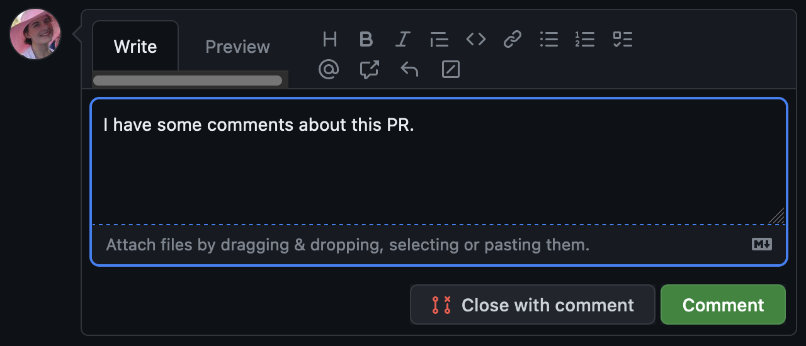
Another useful feature for GitHub is linking Issues and PRs. This is
actually very simple. In the PR’s description or in a comment, mention
the relevant Issue using # and the Issue number.
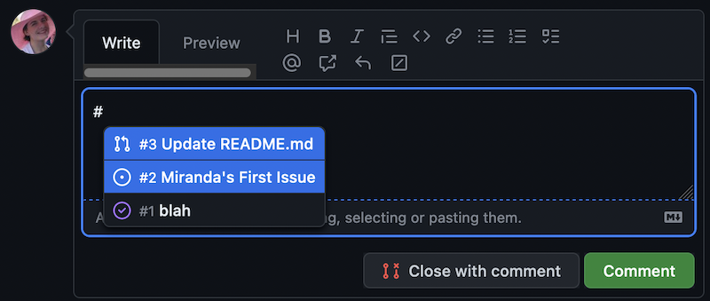
This will create a link to the Issue.
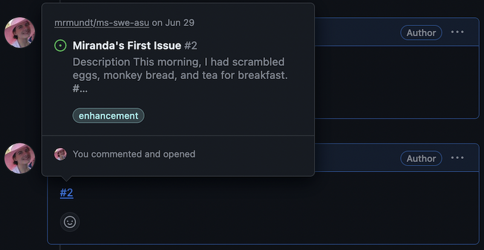
You can also edit the information in the right-hand column.
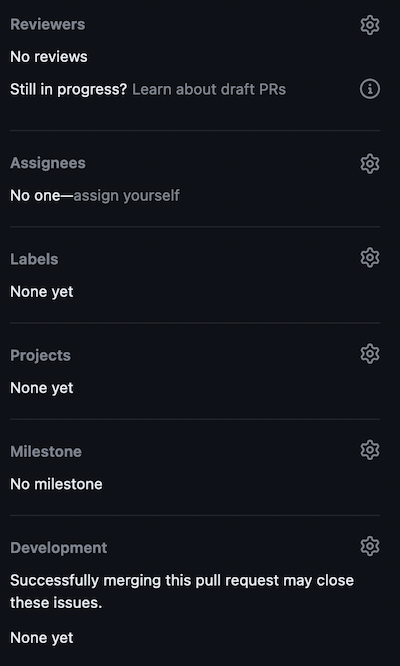
We will cover the following options:
| Options | Purpose |
|---|---|
| Reviewers | Assign reviewer(s) to look over your proposed changes. |
| Assignees | Add assignee(s) who are responsible for incorporating proposed changes. |
| Labels | Assign label(s) to categorize the PR. |
Link It Up
Navigate to your StarSort PR from the previous exercise.
- Add yourself as the
Assignee. - In the description or a comment, link the StarSort bug issue you
filed earlier using
#and its number (or any open issue, if you don’t have one).
Merge a PR
We are done with these changes. We have completed the work on it, had our discussion, and now we are ready to merge the changes.
Wait, what about review?
Nobody reviewed our changes, so do we really want to merge? In a real-case scenario, no! We will cover more about reviewing later, though, so we are going to skip it for now.
Merging a PR is quite simple - just click the “Merge pull request” button.
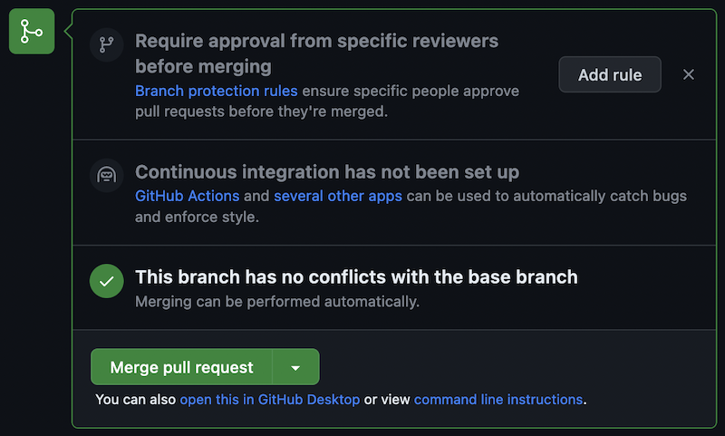
The dropdown on the “Merge pull request” shows several options:
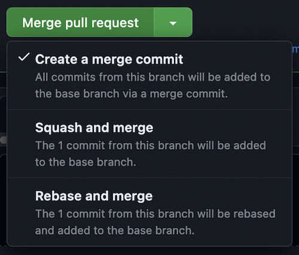
We will not cover all of these options here, but read more about them in GitHub’s official documentation.
When you click the “Merge pull request” button, a new dialog box appears, prompting for the commit message. Once you have made the preferred edits, click “Confirm merge.”
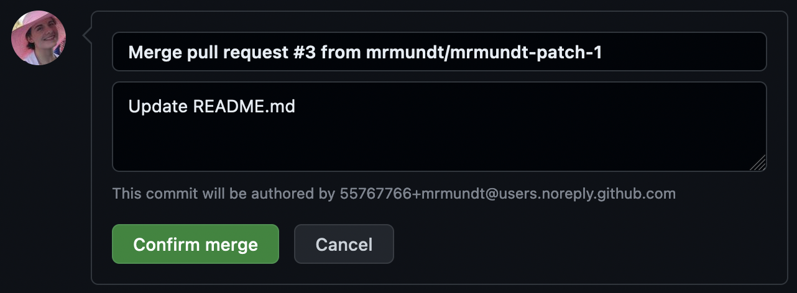
The changes have been incorporated back into the main
branch.
Ship the Fix
Navigate to your StarSort PR from the previous exercises.
- Click “Merge pull request”
- Modify the merge message
- Merge!
You now know the basic actions you can take on a GitHub Pull Request!
- A good PR makes one cohesive change, stays a reasonable size, and describes what/how/why.
- New PRs can be opened in a repository from a branch or a fork.
- Text on PRs use Markdown styling for formatting.
- A user can interact with PRs in multiple ways: commenting, assigning reviewers, linking to other issues and pull requests, and more.
- GenAI can draft a PR description from your diff, but only you know the why — verify it.
Content from Labels and Templates
Last updated on 2026-06-22 | Edit this page
Estimated time: 12 minutes
Overview
Questions
- How do you assign labels to PRs?
- How do you create PR templates?
Objectives
- Learn how to use labels for GitHub PRs.
- Learn how to create a PR template.
GitHub Labels
Each new GitHub repository comes with a set of default labels that can be assigned to issues, pull requests, or discussions.
(If you took the Issue Tracking lesson, you’ll recognize these — labels are shared across issues and PRs in a repo.) From GitHub’s official documentation:
| Label | Description |
|---|---|
bug |
Indicates an unexpected problem or unintended behavior |
documentation |
Indicates a need for improvements or additions to documentation |
duplicate |
Indicates similar issues, pull requests, or discussions |
enhancement |
Indicates new feature requests |
good first issue |
Indicates a good issue for first-time contributors |
help wanted |
Indicates that a maintainer wants help on an issue or pull request |
invalid |
Indicates that an issue, pull request, or discussion is no longer relevant |
question |
Indicates that an issue, pull request, or discussion needs more information |
wontfix |
Indicates that work won’t continue on an issue, pull request, or discussion |
These labels can be viewed from the Issues and Pull Requests pages.
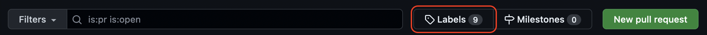
Using Labels
Apply labels two ways: from the main Pull requests page (checkmark a PR > “Label” dropdown > pick label(s)), or inside a single PR via the Labels option on the right-hand side.
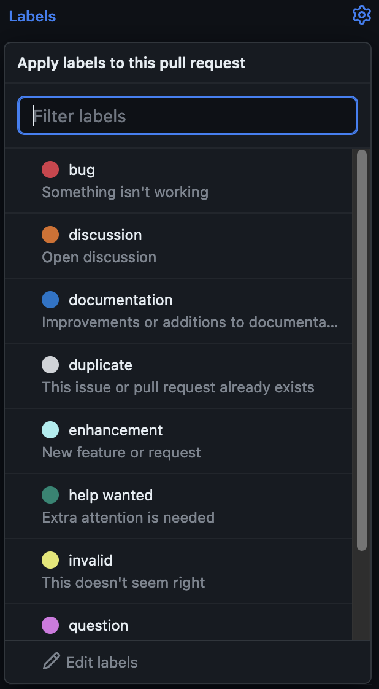
Tag Your StarSort PR
A reviewer should know your StarSort PR touches the docs as well as the fix. In your practice repository’s PR page:
- Make another small change to your
README.mdand open a PR. - Add the
documentationlabel.
What are PR Templates?
PR templates in GitHub are a way to pre-fill new PRs with specific sections, data, instructions, etc.
They are customizable for every project. You can add as many templates as makes sense for your project, or you can have none at all.
Create a New PR Template
Unlike Issues, GitHub does not have a default template for PRs. Instead, we must make the template from scratch.
We navigate to the main repository page. We can make the template in
the root of the repository; however, we recommend instead making it in
the .github directory.
The .github Directory
If you are completing this episode after doing the Issue Tracking
lesson, you should already have a .github directory. If
not, you’ll need to make one! Read more about it on freeCodeCamp.
In the .github repository, we will add a new file named
PULL_REQUEST_TEMPLATE.md.
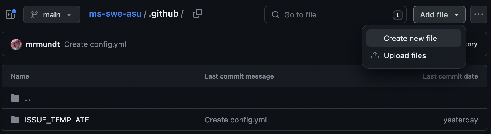
You can now put whatever content you desire in the template. Some examples are:
- Link to Issue: If you want the submitter to link to relevant issues.
- Summary: A section for a description of the changes proposed
- Checklists: A checklist of steps to be completed before a PR can be reviewed.
- Legal Acknowledgement: A summary of legal information
Once the template has the preferred information, commit the changes
to the main branch.
GenAI: Generate a starter template
Templates are structured boilerplate — exactly what LLMs do well. Try asking: “Write a GitHub PULL_REQUEST_TEMPLATE.md for a research software project, with a description section, a what/how/why prompt, and a reviewer checklist.” You’ll get a reasonable draft. Then adjust it to what your team will actually fill in — “less is more” applies to templates too.
Make the StarSort Template
The StarSort maintainers want every PR opened to be consistent. In
your practice repository, create a
PULL_REQUEST_TEMPLATE.md that includes:
- A Description section
- A checklist with two steps (e.g., “tests pass”, “docs updated”)
- (CHALLENGE) Add a Markdown comment (
<!-- ... -->) with a tip for the submitter that won’t render in the final PR
Now when a new PR is opened, the “Write” section will autofill with our template.
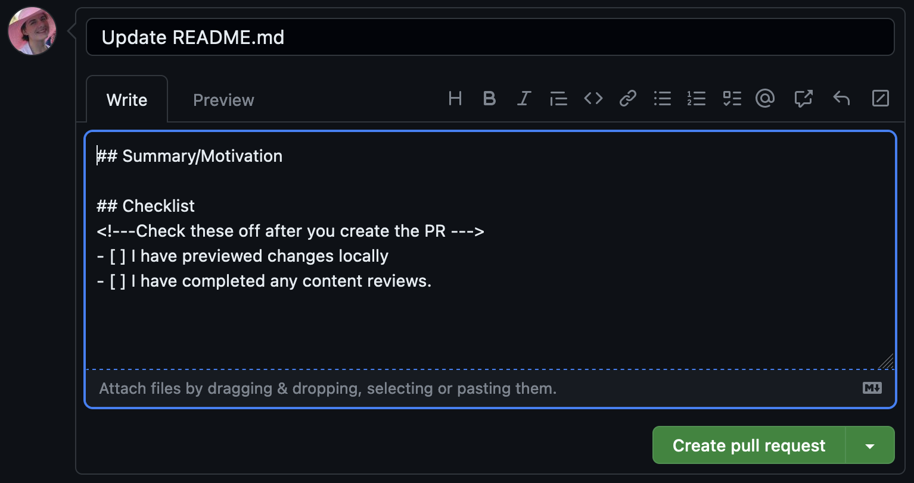
- Labelling PRs can help with prioritization and organization.
- PR Templates can provide clear instructions for steps, expectations, and more.
- GenAI can draft a PR template quickly — adjust it to fit your team.
Content from Spotting 'Good' (and Bad) PRs
Last updated on 2026-07-14 | Edit this page
Estimated time: 9 minutes
Overview
Questions
- What does it mean to be a ‘good’ PR?
- How do you fix a PR that breaks the rules?
Objectives
- Recall the characteristics of a good pull request.
- Practice diagnosing and fixing problematic PRs.
Recap: the Characteristics of a Good PR
You met these when you opened your StarSort PR. Here they are in one place:
| Characteristic | The short version |
|---|---|
| One cohesive change | One PR = one logical thing. (This is the single-responsibility idea: a unit should answer to one purpose.) |
| Reasonable size | Small PRs get reviewed faster and more carefully. Split big ones. |
| What / how / why | The description says what changed, how (incl. side effects), and why. |
None of these are absolute rules — but a PR that follows all three is a gift to whoever reviews it (often future you).
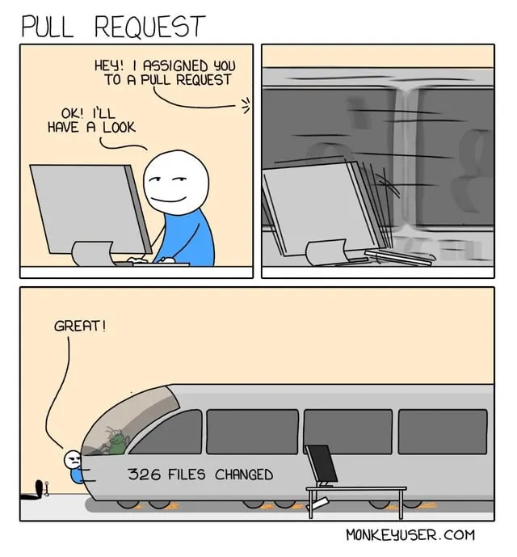
Now You’re the Reviewer
Knowing the habits is one thing; spotting where they’re broken is the real skill. Let’s practice on a few PRs that just landed in StarSort’s queue.
Spot the Problem
For each PR below, name what’s wrong and what you’d ask the author to do.
- PR #41 — “updates” — changes 14 files: fixes the empty-folder crash, renames a function used across the codebase, and adds a brand-new export feature. Description is blank.
- PR #42 — “fix” — a one-line bugfix. Title is just “fix”; no description.
- PR #43 — “Refactor everything before the release” — 2,300 changed lines across 60 files, with the description: “cleaned things up.”
- Does too many things at once (violates one-cohesive-change) and has no description. Ask the author to split it into three PRs — bugfix, rename, feature — each described.
- Not descriptive. The change may be fine, but “fix” tells a reviewer nothing. Ask for a real title and a one-line what/why (e.g., “Fix off-by-one in image index that skipped the last file”).
- Too big and vague. A 2,300-line “cleanup” is nearly unreviewable. Ask the author to break it into focused PRs (one refactor per PR) with descriptions of what and why.
GenAI: A first-pass reviewer (with limits)
LLMs can give a PR a quick first look — flag style issues, summarize a huge diff so a human reviewer knows where to focus, or suggest a clearer description. But they have real limits: they miss project intent and context, can be confidently wrong, and don’t carry accountability. Use AI to prepare a review, not to make a decision — a human still owns the decision to merge. (And for research code, check data/IP policy before pasting a private diff into a third-party tool.)
- A pull request should contain ONE cohesive change.
- A pull request should, ideally, be quickly reviewable.
- A pull request description should give an overview of what, how, and why something changed.
- Diagnosing an oversized, unfocused, or undescribed PR is a core reviewer skill.
- GenAI can assist a review (summaries, first pass) but the human owns the merge decision.
Content from Code Reviews
Last updated on 2026-06-22 | Edit this page
Estimated time: 15 minutes
Overview
Questions
- How do you add reviews to a PR?
- How do you address requested changes?
Objectives
- Become familiar with the code review process on GitHub.
Request a Review
Requesting a review can be done within a PR. Click on a PR, then click on “Reviewers” on the right-hand side. Here you can type in and select reviewers for your PR.
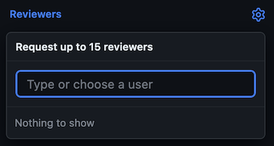
No reviewers?
At this point, likely no reviewers will appear. You can only directly request reviews from “Collaborators” on your repository.
Add a Review
To add a review to a PR, navigate to the PR in question and click on “Files changed.”
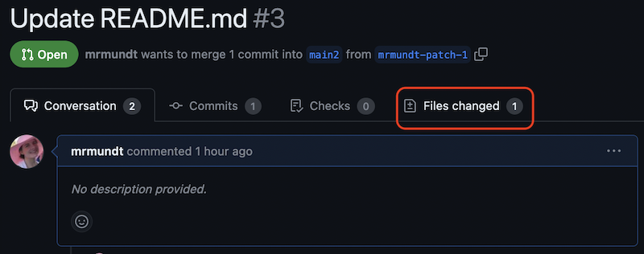
Within this page, when you hover over a line of text, a
+ button will appear to the left.
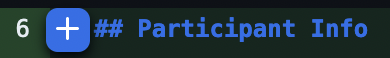
Click on the + button to add a comment to that line.
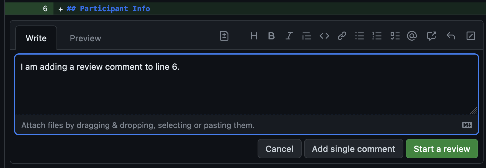
At this point, you can “Cancel”, “Add single comment”, or “Start a review.” If you click “Add single comment”, the comment will be added without rendering a review decision. If you click “Start a review”, this will “start” a review.
Can you see it yet?
At this point, no one can see your review. It is “Pending” until you finish all of your comments.
Once you have finished adding all of the comments, you will need to press the “Review changes” button.
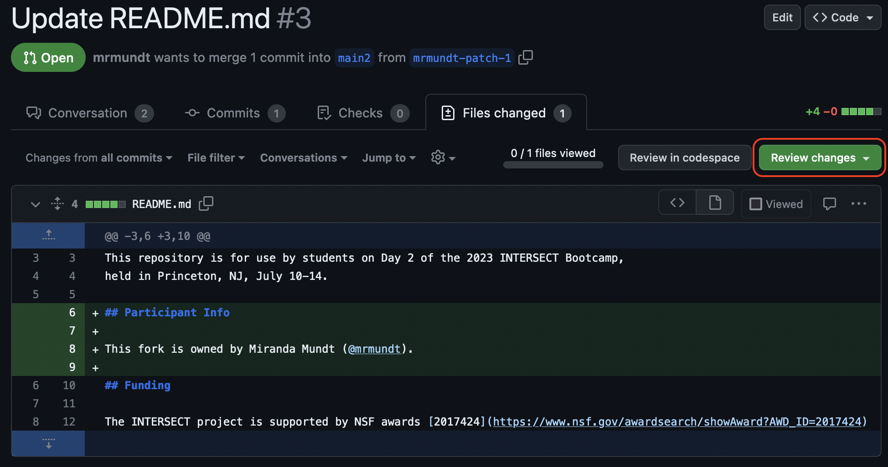
You will see three options: “Comment”, “Approve”, or “Request changes.”
Greyed out options?
Are you following along on your own PR? You might notice that you cannot approve or request changes. This is because you are the author! GitHub doesn’t allow authors to do either of these actions.
Review a Teammate’s StarSort Fix
Time to be the maintainer! Partner up with another participant (you’ll need to add each other as collaborators, or work on a shared repo). Navigate to their practice repository, open one of their StarSort PRs, and:
- Add a couple of line comments using the
+button — be kind and specific (suggest, don’t just criticize). - Submit the review requesting changes.
Address a Review
Review comments can be viewed in the “Conversation” tab as well as in the “Files changed” tab.
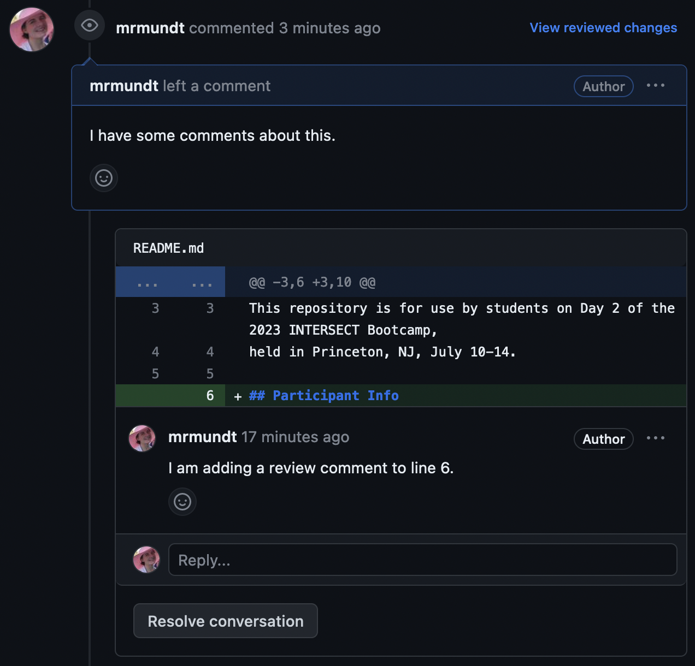
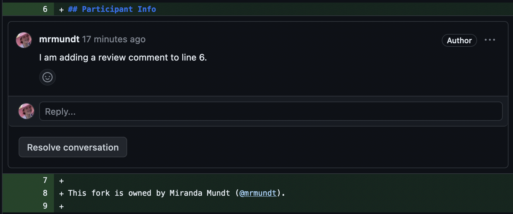
Incorporating requested changes can be done via command line or through the GitHub GUI. Once addressed and pushed, you can resolved the different conversations and re-request a review.
Fix It
Address the changes your partner requested on your StarSort fix, push the updates, then re-request a review from them.
GenAI: A reviewer’s assistant
AI review assistants (in GitHub, your IDE, or a chat tool) can do a useful first pass — flag likely bugs, summarize a big diff, or check style — before a human looks. Treat their output as suggestions to verify, not verdicts: they miss intent and can be confidently wrong, and a human still owns the approve/merge decision. For research code, mind data/IP policy before sharing a private diff.
And that’s all, folks! You now know much more about GitHub Pull Requests.
- Code reviews are integrated into GitHub Pull requests.
- Reviewers can approve, request changes, or simply add comments as part of the review process.
- Good review comments are kind and specific.
- GenAI can assist a review, but the human owns the merge decision.